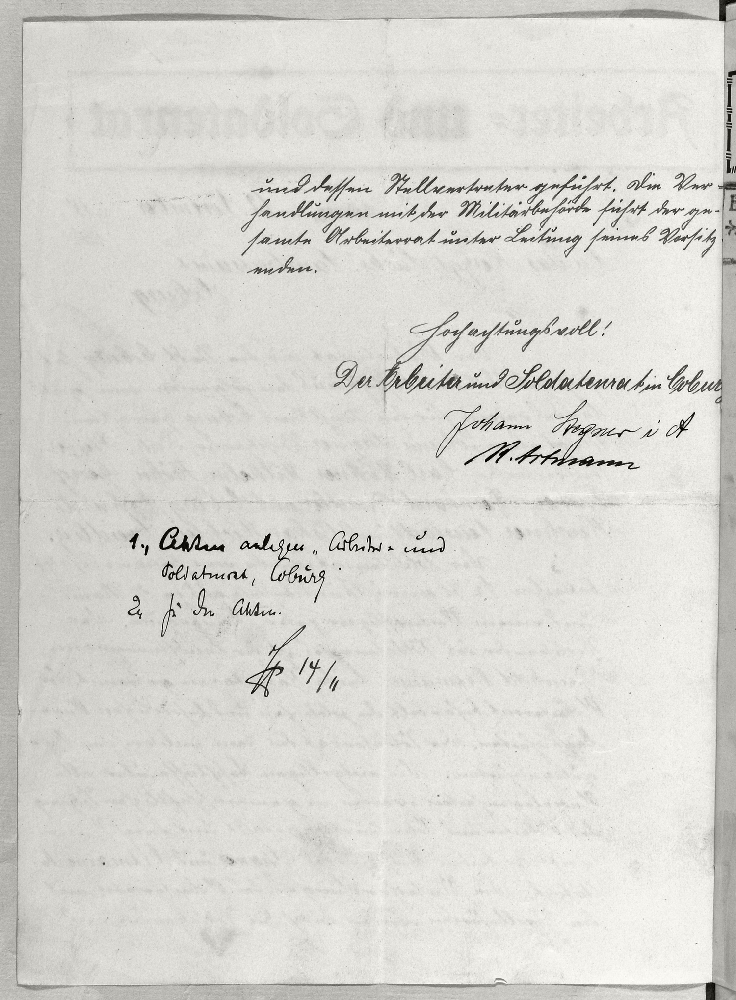

StA Coburg, LRA, 14004, fol. 1v



Kommentar
Editor: magdalena.weileder@textgrid.de
Archiv: StA Coburg
Bestand: LRA
Signatur: 14004, fol. 1v
Ort: Coburg
Datum: 1918 November 12
Schlagwort: Akt
Schwierigkeitsgrad: leicht
Kurzbetreff:
Schreiben des Arbeiter- und Soldatenrats von Coburg
Schreiben des Arbeiter- und Soldatenrats von Coburg
Schreiberhände:
- gedruckte Formularteile (S1)
- Eingangsstempel des Landratsamts (S2)
- Schreiber des Arbeiter- und Soldatenrats (S3)
- Johann Stegner (S4)
- Reinhold Artmann (S5)
- Schreiber des Landratsamts (S6)
Kommentar:
Entzifferung
(Absatz Beginn)
1 und dessen Stellvertreter geführt. Die Ver-
2 handlungen mit der Militärbehörde führt der ge-
3 samte Arbeiterrat unter Leitung seines Vorsitz[-]
4 enden.
5 Hochachtungsvoll!
6 Der Arbeiter und Soldatenrat in Cobur[g] (Wechsel des Schriftsystems)
7 (Johann Stegner:) Johann Stegner i(m) A(uftrag) (Wechsel des Schriftsystems)
8 (Reinhold Artmann:) R(einhold) Artmann(Wechsel des Schriftsystems)
9 (Schreiber des Landratsamts:) 1., Akten anlegen „Arbeiter= und
10 Soldatenrat, Coburg
11 2., Zu den Akten.
12 [Paraphe, nicht auflösbar] 14/11
(Absatz Ende)
Transkription
(Absatz Beginn)
1 und dessen Stellvertreter geführt. Die Ver-
2 handlungen mit der Militärbehörde führt der ge-
3 samte Arbeiterrat unter Leitung seines Vorsitz-
4 enden.
5 Hochachtungsvoll!
6 Der Arbeiter- und Soldatenrat in Cobur[g](Wechsel des Schriftsystems)
7 (Johann Stegner:) Johann Stegner im Auftrag(Wechsel des Schriftsystems)
8 (Reinhold Artmann:) Reinhold Artmann(Wechsel des Schriftsystems)
9 (Schreiber des Landratsamts:) 1. Akten anlegen: „Arbeiter- und
10 Soldatenrat, Coburg“
11 2. Zu den Akten.
12 [Paraphe, nicht auflösbar] 14/11
(Absatz Ende)